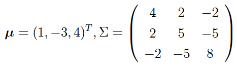
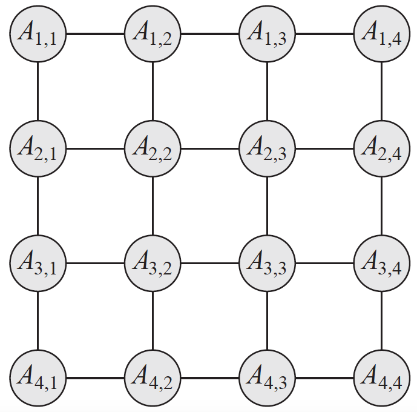
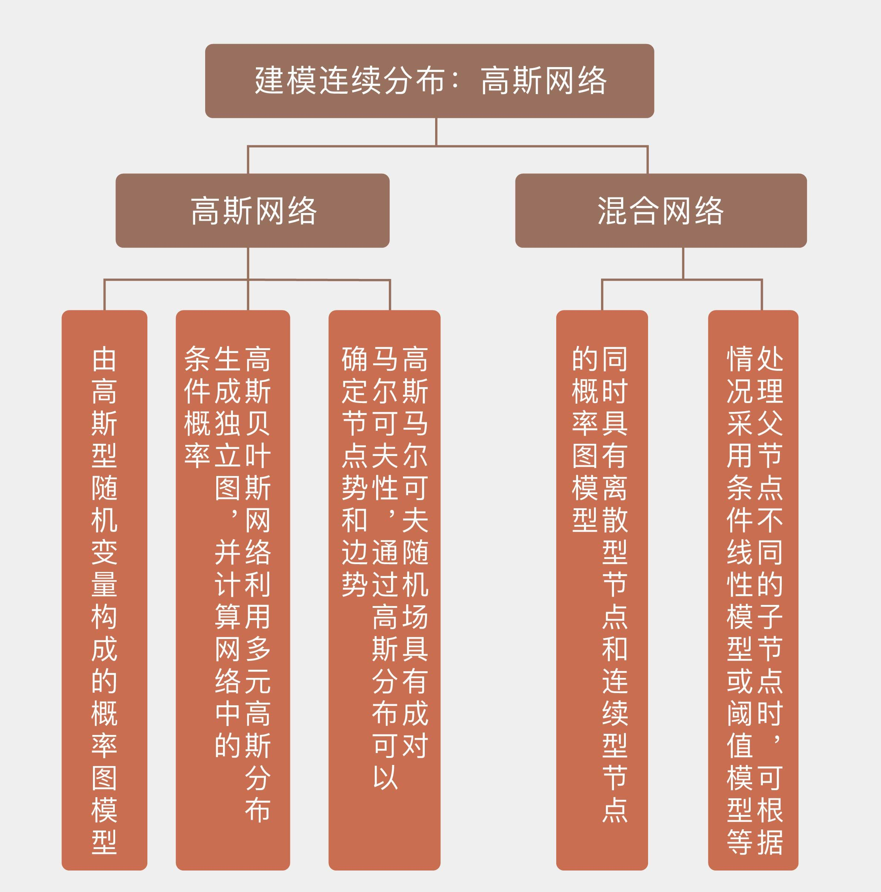

- 00 开篇词 打通修炼机器学习的任督二脉.md.html
- 01 频率视角下的机器学习.md.html
- 02 贝叶斯视角下的机器学习.md.html
- 03 学什么与怎么学.md.html
- 04 计算学习理论.md.html
- 05 模型的分类方式.md.html
- 06 模型的设计准则.md.html
- 07 模型的验证方法.md.html
- 08 模型的评估指标.md.html
- 09 实验设计.md.html
- 10 特征预处理.md.html
- 11 基础线性回归：一元与多元.md.html
- 12 正则化处理：收缩方法与边际化.md.html
- 13 线性降维：主成分的使用.md.html
- 14 非线性降维：流形学习.md.html
- 15 从回归到分类：联系函数与降维.md.html
- 16 建模非正态分布：广义线性模型.md.html
- 17 几何角度看分类：支持向量机.md.html
- 18 从全局到局部：核技巧.md.html
- 19 非参数化的局部模型：K近邻.md.html
- 20 基于距离的学习：聚类与度量学习.md.html
- 21 基函数扩展：属性的非线性化.md.html
- 22 自适应的基函数：神经网络.md.html
- 23 层次化的神经网络：深度学习.md.html
- 24 深度编解码：表示学习.md.html
- 25 基于特征的区域划分：树模型.md.html
- 26 集成化处理：Boosting与Bagging.md.html
- 27 万能模型：梯度提升与随机森林.md.html
- 28 最简单的概率图：朴素贝叶斯.md.html
- 29 有向图模型：贝叶斯网络.md.html
- 30 无向图模型：马尔可夫随机场.md.html
- 31 建模连续分布：高斯网络.md.html
- 32 从有限到无限：高斯过程.md.html
- 33 序列化建模：隐马尔可夫模型.md.html
- 34 连续序列化模型：线性动态系统.md.html
- 35 精确推断：变量消除及其拓展.md.html
- 36 确定近似推断：变分贝叶斯.md.html
- 37 随机近似推断：MCMC.md.html
- 38 完备数据下的参数学习：有向图与无向图.md.html
- 39 隐变量下的参数学习：EM方法与混合模型.md.html
- 40 结构学习：基于约束与基于评分.md.html
- 如何成为机器学习工程师？.md.html
- 总结课 机器学习的模型体系.md.html
- 总结课 贝叶斯学习的模型体系.md.html
- 结课 终有一天，你将为今天的付出骄傲.md.html
- 捐赠
31 建模连续分布：高斯网络
无论是贝叶斯网络还是马尔可夫随机场，定义的变量都服从取值有限的离散分布，变量之间的关联则可以用有限维度的矩阵来表示。如果将随机变量的范围从离散型扩展到连续型，变量的可能取值就有无穷多个，这时变量之间的依赖关系就不能再用表格的形式来表示了，需要重新定义概率图模型中的相互作用与条件独立性。
考虑最简单的情形，也就是结点所表示的随机变量都服从高斯分布，由高斯型连续随机变量构成的概率图模型统称为高斯网络（Gaussian network）。
如果多个服从一维高斯分布的随机变量构成一个整体，那它们的联合分布就是多元高斯分布（multivariate Gaussian distribution），其数学表达式可以写成
\[ p({\\bf x}) = \\dfrac{1}{(2\\pi)^{n / 2} | \\Sigma |^{1/2}} \\exp \[-\\dfrac{1}{2} ({\\bf x} - \\boldsymbol \\mu)^ T \\Sigma^{-1} ({\\bf x} - \\boldsymbol \\mu)\] \]
其中\(\\boldsymbol \\mu\)是这组随机变量的均值向量（mean vector），\(\\Sigma\)是这组随机变量的协方差矩阵（covariance matrix），\(| \\Sigma |\)是它的行列式值。
协方差矩阵是对称的正定（positive definite）矩阵，表示了不同变量之间的关联：如果两个变量线性无关，那么其协方差矩阵中对应的元素就等于0，这意味着两个变量满足边际独立性（marginal independency）；如果所有变量都线性无关的话，协方差矩阵就退化为对角矩阵。
协方差矩阵的逆矩阵\(J = \\Sigma ^ {-1}\)被称为信息矩阵（information matrix），信息矩阵和均值向量的乘积则被称为势向量（potential vector）。
引入信息矩阵意在定义条件独立性（conditional independency）：和边际独立性不同，条件独立性不能直接在协方差矩阵中体现出来，必须通过信息矩阵加以观察。信息矩阵的元素等于0说明对应的两个变量在给定其他变量的前提下条件独立，比如\(J_{1,3} = 0\)就意味着着在其他变量固定时，\(x_1\)和\(x_3\)条件独立。
在高斯分布的基础上可以进一步定义高斯线性模型。高斯线性模型（linear Gaussian model）指的是一个随机变量可以表示为一组随机变量的线性组合，这个随机变量本身的不确定性则可以用高斯分布来建模，这种关系写成数学表达式就是
\[ y = \\beta_0 + \\beta_1 x_1 + \\cdots + \\beta_k x_k + \\epsilon, \\epsilon ~{} {\\mathscr N}(0, \\sigma ^ 2) \]
这其实和原始线性回归的假设是完全一致的。把这种关系放到概率图模型中，那么所有的\(x_i\)都可以看成结点\(y\)的父结点，它们一起构成了汇连结构。从概率角度看，给定这些父结点后，子结点\(y\)的条件概率就服从高斯分布，其均值是\(x_i\)的线性组合，方差则是噪声\(\\epsilon\)的方差。
上面的表达式中假设所有自变量\(x_i\)都有固定的取值，如果这些自变量都是随机变量，共同服从均值为\(\\boldsymbol \\mu\)，协方差矩阵为\(\\Sigma\)的多维高斯分布的话，那么可以证明随机变量\(y\)也是高斯随机变量，它的均值等于\(\\beta_0 + \\boldsymbol \\beta^T \\boldsymbol \\mu\)，方差等于\(\\sigma ^ 2 + \\boldsymbol \\beta^T \\Sigma \\boldsymbol \\beta\)，和变量\(X_i\)的协方差则等于\(\\sum_{j = 1}^k \\beta_j\\Sigma_{i,j}\)。
这样的结论告诉我们，高斯线性模型实际上定义了一个高斯贝叶斯网络（Gaussian Bayesian network），整个概率图所表示的联合分布就是一个大的多维高斯分布。
高斯贝叶斯网络的表示可以用下面这个例子来直观地解释，这个例子来自《概率图模型》（Probabilistic Graphical Models）的例7.3。
“如果一个线性高斯网络具有顺连结构\(X_1 \\rightarrow X_2 \\rightarrow X_3\)，其中\(X_1\)的概率密度\({\\mathscr N}(1, 4)\)，已知\(X_1\)时\(X_2\)的条件概率密度为\({\\mathscr N}(0.5X_1 - 3.5, 4)\)，已知\(X_2\)时\(X_3\)的条件概率密度为\({\\mathscr N}(-X_2 + 1, 3)\)，试求解整个网络所表示的联合分布。“
在高斯形式已经确定的前提下，求解联合分布实际上就是求解所有变量的均值向量和协方差矩阵。由于\(X_2\)等于\(0.5X_1 - 3.5\)，将\(X_1\)的均值为1代入这个线性关系，就可以求出\(X_2\)的均值等于\(0.5 \\times 1 - 3.5 = -3\)，同理可以求出\(X_2\)的均值等于\(-(-3) + 1 = 4\)。
求完了均值再来看协方差，协方差矩阵的对称性决定了对于3维变量来说，计算协方差矩阵需要确定6个元素。\(X_1\)的方差\(\\Sigma_{11} = 4\)是已知的，这部分方差将会以线性系数为比例体现在\(X_2\)中，和\(X_2\)自身的不确定度共同构成随机变量完整的方差，也就是\(\\Sigma_{22} = 0.5^2 \\times 4 + 4 = 5\)。将\(X_2\)的方差代入\(X_3\)的线性关系，又可以计算出\(\\Sigma_{33} = (-1)^2 \\times 5 + 3 = 8\)。这三个方差定义了变量自身的不确定性，是协方差矩阵中的对角线元素。
确定了对角线元素后，下一步就是确定非对角线上的元素，也就是不同变量之间的相关性。由于\(X_2\)这个变量只取决于\(X_1\)，其关联的强度由线性系数确定，因而两者之间的协方差就等于线性系数和\(X_1\)方差的乘积\(\\Sigma_{12} = 0.5 \\times \\Sigma_{11} = 2\)。这个数字的含义在于用\(X_1\)的变化对\(X_2\)的变化的影响。同理可以求出，\(X_2\)和\(X_3\)之间的协方差为\(\\Sigma_{23} = -1 \\times \\Sigma_{22} = -5\)。
在这个顺连结构中，\(X_1\)和\(X_3\)之间并不存在直接的作用，而是以\(X_2\)作为媒介和中转。\(X_1\)对\(X_3\)的作用实际上可以分成两个阶段，第一个阶段是\(X_1\)的变化首先影响\(X_2\)，第二个阶段是\(X_2\)的变化继续影响\(X_3\)。在协方差的计算中，第一个阶段体现为\(X_1\)和\(X_2\)之间的协方差，第二个阶段则体现为\(X_2\)和\(X_3\)之间的线性系数的加权作用。两者相乘形成了一个整体，也就是\(\\Sigma_{13} = \\Sigma_{12} \\cdot (-1) = -2\)。由此，就可以写出联合分布的均值向量和协方差矩阵

关于这个例子需要说明的一点是，由于协方差矩阵中所有的元素都不为0，说明这些变量两两之间都不是边际独立的。但顺连结构告诉我们，当\(X_2\)确定时，\(X_1\)和\(X_3\)条件独立，所以它的信息矩阵中会有两个零元素。这说明在图结构中，表示同一个联合分布只需要更少的参数。
但淮南为橘淮北为枳，图结构的优势也可能变成劣势。想象一下汇连结构\(X_1 \\rightarrow X_2 \\leftarrow X_3\)，由于汇连结构中不存在条件独立的结点，因此联合分布的信息矩阵中所有元素都是非零的。但由于\(X_1\)和\(X_3\)互不影响，因此协方差矩阵中反倒存在着零元素。
在此基础上，如果再给结点\(X_1\)和\(X_3\)赋予一个共同的父结点\(X_4\)，让这三者形成分连结构的话，那整个网络中就既没有条件独立性，也没有边际独立性，无论是协方差矩阵还是信息矩阵中就都不会出现非零元素了。
将多元高斯分布嵌入到无向的马尔可夫随机场中，得到的就是高斯马尔可夫随机场（Gaussian Markov random field）。在处理高斯随机场时，先要对多元高斯分布的概率密度做些处理，将指数项中的协方差逆矩阵\(\\Sigma ^ {-1}\)替换为信息矩阵\(J\)并展开。由于均值向量和信息矩阵都是常量，将它们去掉就可以得到概率密度的正比关系
\[ p({\\bf s}) \\propto \\exp \[-\\dfrac{1}{2} {\\bf x}^T J {\\bf x} + (J \\boldsymbol \\mu)^T {\\bf x}\] \]
这个式子被称为高斯分布的信息形式（information form）。由于式子中的\(\\bf x\)是向量，因此展开后的结果中会包含两种多项式成分：一种成分是单个变量\(X_i\)的函数，其表达式可以写成\(-J_{i, i}x_i^2 / 2 + h_ix_i\)，其中\(h_i\)是势向量的第\(i\)个分量；另一种成分是两个变量\(X_i\)和\(X_j\)乘积的函数，其表达式可以写成\(-J_{i, j}x_ix_j\)。
在高斯随机场中，这两个不同的成分具有不同的意义。只与单个变量相关的成分可以看成每个结点的势函数（node potential），同时涉及两个变量的成分则可以看成连接这两个结点的边的势函数（edge potential）。如果信息矩阵的元素\(J_{i, j} = 0\)，其对应的边势也等于0，就说明这两个结点之间并没有连接的边。
需要说明的是，在前一篇对马尔可夫随机场的介绍中我提到了边势，但并没有涉及结点势的概念。其原因在于结点势并不是通用的概念，它只存在于具有成对马尔可夫性的网络之中。下图是一个典型的成对马尔可夫随机场，每个结点都和它所有的非邻接结点条件独立，在信息矩阵\(J\)中，这些条件独立的结点组合所对应的元素就等于0。

成对马尔可夫随机场（图片来自Probabilistic Graphical Models，图4.A.1）
多元高斯分布定义的是成对的马尔可夫随机场，其中的每个势函数都具有二次型的形式。反过来，由于任何合法的高斯分布都具有正定的信息矩阵，所以如果一个成对随机场能够改写成多元高斯分布，那它的势函数的系数所形成的矩阵也必须得满足正定的条件。
对连续分布的建模能够大大拓展概率图模型的应用范围，毕竟现实中大量的观测结果都是连续变化的。虽然高斯分布并不适用于所有的连续变量，但良好的数学性质和便于计算的特点让它成为了理想条件下近似建模的首选。
如果一个概率图模型中的随机变量既有离散型也有连续型，这样的网络就是混合网络（hybrid network）。混合网络让人头疼的一个问题是同一个结点的父结点可能存在不同的类型，其中既有连续分布的结点，也有离散分布的结点。而在处理这些父结点不同的子结点时，需要根据情况分类讨论。
如果子结点是连续分布的结点，那么问题就简单了。由于离散分布的父结点取值的组合是有限的，就可以对每一种可能的取值都为子结点定义一组线性系数，将离散结点的信息编码到这组线性系数当中。
这样一来，子结点就可以表示成连续父结点的线性组合，其中的线性系数则由离散父结点来决定。这种模型被称为条件线性模型（conditional linear model），它本质上是一组不同参数的高斯分布所形成的混合模型（mixture model），每个分布的权重取决于这一组参数出现的概率。
当一个离散的子结点具有连续的父结点时，解决的方法也不复杂。最简单的办法是采用阈值模型（threshold model），当连续变量的取值大于阈值时输出1，小于阈值时输出0。更加精细的一种方式是用借鉴逻辑回归或者softmax回归的思想，计算离散的子结点关于连续的父结点的条件概率，并输出条件概率最大的结果。
今天我和你分享了概率图模型中对连续型随机变量的建模与表示，其要点如下：
高斯网络采用高斯线性模型建模连续变量，其数字特征为均值向量和协方差矩阵；
高斯贝叶斯网络利用多元高斯分布生成独立图，利用信息矩阵计算网络中的条件概率；
高斯马尔可夫随机场具有成对马尔可夫性，通过高斯分布可以确定结点势和边势；
混合网络是同时具有离散型结点和连续型结点的概率图模型。
在现实生活中，自然界客观存在的属性通常是连续分布的，而人为定义出来的属性则通常是离散的，那么你能想象出有哪些离散变量和连续变量共存的应用场景呢？
欢迎分享你的观点。

© 2019 - 2023 Liangliang Lee. Powered by gin and hexo-theme-book.